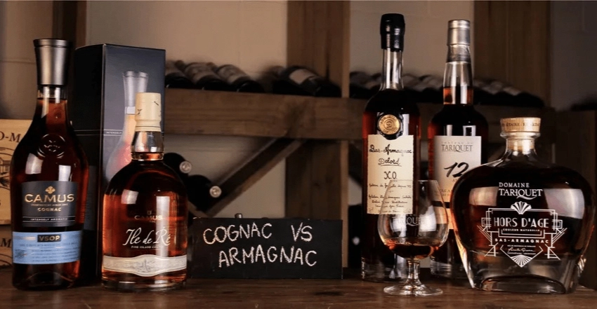

Коньяк и арманьяк – два знаменитых французских дистиллята, каждый из которых обладает богатой историей и уникальными характеристиками. Несмотря на их сходство, существует множество ключевых отличий между этими напитками. Рассмотрим пять самых значимых различий.
1. Место происхождения
Арманьяк производится в регионе Гасконь, расположенном южнее Коньяка. Более теплый климат этого региона позволяет винограду быстрее вызревать, что приводит к более интенсивным ароматам и повышенному содержанию сахара в ягодах. Это, в свою очередь, увеличивает уровень алкоголя в готовом напитке. Почвы в Арманьяке преимущественно песчаные и глинисто-известняковые, что придает напитку насыщенный вкус.
Коньяк производится в департаменте Шаранта, рядом с Бордо. Здесь преобладают меловые почвы, которые придают местному винограду изящные ароматы и сохраняют высокую кислотность. Морской климат Коньяка смягчает температурные колебания, что помогает сохранить тонкость и свежесть вкуса винограда.
2. Сорта винограда
Для производства арманьяка используются несколько сортов белого винограда: уньи блан, бако, фоль бланш, коломбар и другие. Виноделы часто создают бленды из этих сортов, чтобы достичь баланса и гармоничного букета ароматов.
Коньяк преимущественно изготавливается из одного сорта винограда – уньи блан, который занимает почти 100% виноградников региона. Это придает коньяку характерный чистый и изысканный вкус.
3. Технология перегонки
Арманьяк производится путем однократной перегонки в специальных колоннах, что придает ему более плотный и насыщенный вкус. Виноделы иногда используют мобильные перегонные установки, которые перемещаются от одного производителя к другому.
Коньяк проходит двойную перегонку в шарантском аламбике, что делает его спирт более округлым и гладким. Такая технология позволяет получить более утонченный и нежный вкус.
4. Требования по выдержке
Арманьяк может продаваться без выдержки, сохраняя наименование по происхождению с пометкой “Blanche” (белый). Для выдержанных арманьяков используются бочки из гасконского дуба. Винтажные арманьяки с указанием года урожая также являются обычным явлением.
Коньяк требует обязательной выдержки в дубовых бочках, и напиток без выдержки не может называться коньяком. Для выдержки используются бочки из лимузенского или Тронсэ дуба. Винтажные коньяки встречаются реже.
5. Популярность в мире
Коньяк широко известен и популярен на международном уровне, благодаря удобному географическому положению региона и активной торговле через океанские пути. Крупные компании, занимающиеся производством коньяка, вкладывают значительные средства в маркетинг и продвижение.
Арманьяк менее известен за пределами Франции и производится в основном небольшими семейными предприятиями. Однако именно арманьяк признан историческим гастрономическим наследием Франции.
Эти различия подчеркивают уникальные характеристики и богатую традицию каждого напитка, делая их незаменимыми элементами французской культуры и наследия.
Если вы хотите продать алкоголь в Москве, то мы рады вам помочь! Скупка вина, шампанского, виски, коньяка, рома, текилы, водки и другого алкоголя по самым лучшим ценам. Свяжитесь с нами любым удобным образом:
- По номеру телефона: + 7 (981)-183-06-06
- WhatsApp: https://wa.me/79811830606
- Telegram: https://t.me/Pro_decanter